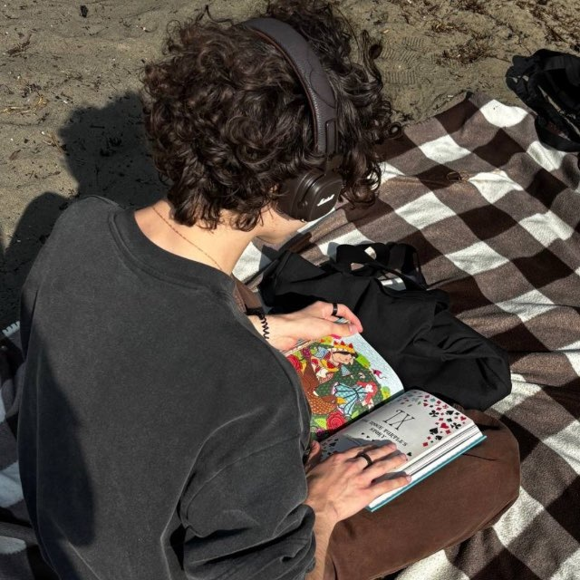

19 років, переїхав із Павлограда до Києва заради нових можливостей. Другий курс перекладацького факультету в Шевченка — на контракті з грантом. Рік суміщає повний робочий день у World of Comics із навчанням. Результат — вигорання і питання без відповіді: куди рухатись далі.

Гліб · 19 роківТе, що ти сам розповів на сесії — зібране в один портрет, без прикрас.
Другий курс перекладацького факультету (англійська—українська), університет Шевченка, контракт із грантом. Вступав туди, бо саме з англійської та української мав найкращі шкільні бали — а не через покликання до перекладу. Перший курс закривав добре, зараз через роботу закриває семестр на 60–80 балів і не встигає весь матеріал.
Старший продавець-консультант у World of Comics. Почав стажером без доступу до каси, за пару місяців виріс до мультифункціональної ролі: консультації, каса, відкриття й закриття зміни. Графік — по 12 годин, фізично виснажує.
18–19 тис. грн на місяць, у сезон із бонусами — до 22 тис., у січні бонусів немає взагалі. Для Києва це мала зарплата, і ти сам це визнаєш.
Живе в гуртожитку. Магазин розташований на туристичній локації біля площі — постійно спілкується англійською з іноземними відвідувачами (мексиканці, індуси, американські студенти), а з другом із Казахстану принципово спілкується лише англійською.
На вступі здавалось, що «прикольно бути перекладачем». Тепер розуміє: сидіти й самому перекладати — не його. Рівень мови лишається головним активом, навіть якщо сама професія не приваблює.
Прокидатись без будильника, працювати віддалено або їздити в офіс тоді, коли сам захоче, і мати вільний вечір на себе. Перша мотивація переїзду в Київ — нові можливості. Зараз є ще одна: дівчина, яка теж будує кар'єру, і небажання відставати.
Тест, який ти проходив перед сесією, показав три архетипи. Це не ярлик — це підказка, де тобі буде природніше.
Любить розбиратись у суті питання, аналізувати і доходити до причини, а не діяти навмання.
Вміє діяти рішуче й тримати структуру там, де інші губляться — навіть у стресі, коли інші панікують.
Комфортно з практичними, послідовними задачами — робити і доводити до ладу.
Не переклад і не комікси — а те, де твоя англійська та навички цінуються самі по собі, у міжнародних компаніях.
Аутсорс-центри та іноземні компанії постійно шукають операторів підтримки — чат, пошта, дзвінки. Поріг входу невисокий за хорошої англійської. Ти вже маєш живу практику: щодня спілкуєшся з іноземними відвідувачами магазину і тримаєш спокій зі складними клієнтами — це і є суть цієї роботи.
Компанії, що працюють на іноземний ринок, шукають уважних людей, які вміють знайти помилку і чітко описати її англійською. Ти вже сам дивився вакансії тестувальника і поверхово розумієш процес — просто поки що зупиняє відчуття, що ринок IT в Україні зараз дуже перенавантажений. Важливий нюанс: без курсу тестувальника на такі позиції зараз не податися — це не «страх», а формальна умова входу, яку варто закрити першою.
Ти сам казав, що «нічого не приходить в голову» — і це нормально. Ось що видно ззовні, з твоїх власних відповідей.
Тебе хвалять колеги саме за вміння контактувати зі скандальними клієнтами. Це рідкісна і затребувана якість — і саме її ти назвав «не впаривати, а підтримувати».
Ти вже щодня практикуєш англійську з реальними іноземними клієнтами і з другом з Казахстану — це відрізняє тебе від тих, хто вчив мову лише на парах.
Люди регулярно просять порадити комікс або подарунок — навіть безкоштовно. Це ознака реальної навички впливу, яку можна застосувати в будь-якій сфері.
Рік ти поєднуєш навчання з 12-годинними змінами і виконуєш одразу кілька ролей у зміні — консультації, каса, відкриття/закриття. Це рідкісна витримка для 19 років.
Архетип Enforcer — уміння тримати структуру в стресі. Сам визнаєш, що не завжди «холоднокровний на 100%», але вмієш повертати собі раціональність швидше за інших.
Найбільше занурення в роботу було саме в перші місяці — коли все було нове. Це підказка: тобі заходить вивчати щось з нуля, а не рутина.
Ми не оцінюємо, ми досліджуємо. Це те, з чим варто працювати м'яко, а не силою волі.
Пряма причина, чому кілька місяців роздумів поки не перетворились на дію. Ти сам обираєш триматись за звичне, навіть коли воно виснажує.
Резюме колись було, коли влаштовувався у World of Comics, — просто відтоді жодного разу не оновлював. Це найбільший практичний ризик прямо зараз.
Соцмережі й нетворкінг — те, що постійно відкладається. Але це не означає, що тобі треба в блогінг: тобі просто потрібен маленький, конкретний крок, а не публічність заради публічності.
Будь-який перехід відчувається ризикованим без подушки безпеки — особливо коли поруч людина, яка вже впевнено будує кар'єру. Це варто врахувати в темпі, а не ігнорувати.
Щоб одразу було зрозуміло, чим ти можеш бути корисним.
«Рік працюю з клієнтами в роздрібній торгівлі, зокрема з іноземцями — і завжди тримаю спокій, навіть у складних розмовах. Хочу застосувати цей навик і англійську в підтримці клієнтів міжнародної компанії.»
«Люблю розбиратись у деталях і доводити ситуацію до ладу. Вже цікавився процесом QA самостійно — хочу спробувати себе в тестуванні продукту для команди, що працює з іноземними клієнтами.»
Це не «почати з нуля» — у тебе вже було резюме, коли влаштовувався у World of Comics. Просто оновити його: акцент на англійську і навик роботи зі складними клієнтами.
Без нього зараз не можна подаватись на позиції QA — це формальна умова входу в Шлях B, а не другорядний бонус.
Відгукнутись на одну вакансію в аутсорс чи міжнародну компанію. Маленький — але зроблений.
Ось як можна рухатись глибше. Ціни — приклад, за яким можна орієнтуватись.
Враховуючи, що зміна зараз відчувається ризикованою, а рішучий перший крок часто відкладається на «ще подумаю» — три сесії в останньому пакеті дають простір довести справу до кінця, а не зупинитись на першому кроці.